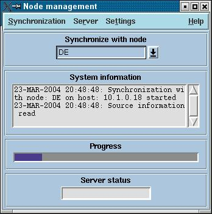
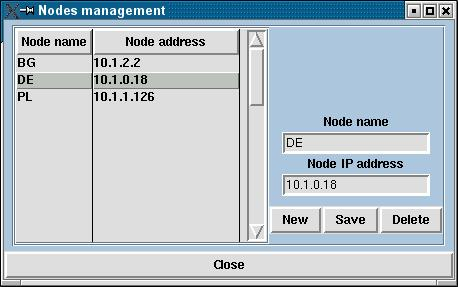
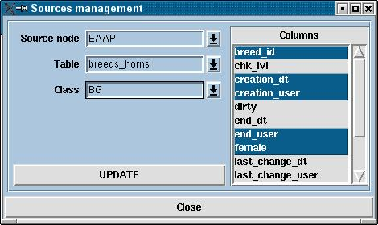
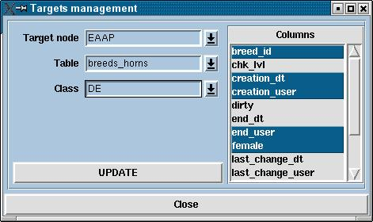

Node Management System
- Introduction
- How to start the synchronization
- Managing node information
- Managing sources information
- Managing targets information
- Managing the server
- Getting help
The node management system is written as a frontend of the synchronization
process in APIIS-based network. This network consist of APIIS servers
called nodes. Each node has unique name and IP address. This information is stored
in the database of each node in table "nodes". How to manage this table you will find
here. The next step is to determine the data elements -
what information you receive and what information you supply to the other nodes. This is done
by managing tables sources and targets.
Usually this these setting are done in the beginning when a node is established and only occasional
changes may oocure at a later stage.
The synchronization process is client-server type. On the source node server daemon is listening for
incoming connections. The initiator of such a connection is the target mode where the client is started.
So if you want to give the others the opportunity to get your data you have to start the server daemon on
your node. How to start/stop the server you can find here.
If you want to get data from other nodes then you have to start the client or simply
start the synchronization(and hope that the other side is running the server)
The synchronization process is maintained via the main window:

First you have to choose the server node from the drop-down list Synchronize
with node. Then from the menu bar choose: Synchronization>Start.
Then you can monitor the process via the progress bar and the System
information field.
To open the nodes namagement window choose from the menu bar Settings>Nodes.
The window should look like this:

The list on the left side containes the names and IP addresses of
all nodes in the network.
To add new node click the New button and enter node name and node
IP address in the responding fields. To save the information to the
database click the Save button.
To edit the information about certain node first select the node from
the list. Then you will see the node name and the IP address also
in the text fields where you can edit the information. To save the
changes click Save.
To delete a node simply select it from the list and click the Delete button.
To describe what information you want to receive from the others you have to start
Settings>Sources.

Then choose the source, the table name and the class of
the records you want from the responding drop-down lists.
The classification of the records in EFABIS is made on the base of their ownership by respective country. Therefore the class list is
very similar to the node list, so be careful.
When the source, table and class are choosed you
have to decide which columns from this table you want. You can select one or more column from
the list on the right. To select multiply consecutive columns select the first one, then press and
hold the Shift key and select the last one from the sequense you want. To select multiply
non-consecutive columns - select the first, press and hold the Control key and select one
by one the other columns. To deselect a column press and hold the Control key and click on
this column.
To store the changes click the Update button.
On the example above we want to receive from node EAAP from table breeds_horns the data from
columns breed_id, creation_dt, creation_user, end_user, female, but only from those records that
are owned by Bulgaria.
The management of the information we supply to the other is similar to the one with the sources.
You have to start Settings>Targets and choose target node, table name, class and columns.

On this example we will sent to EAAP the German data from the columns breed_id, creation_dt, creation_user,
end_user, female in table breeds_horns.
Here you can start/stop the server daemon and verify the server status
To start server daemon on the current node click Server>Start.
To stop click Server>Stop.
To check the status of the server on the certain node you have to select the node from the drop-down list Synchronize with node and choose from the menu Server>Ping.
The status message will appear in Server status field. There are three possibilities:
- FREE - server is up and ready for synchronization
- BUSY - server is up, but is currently in synchronization with other client
- Not responding - client cannot establish connection with the server
For more help you can email me: duchev@tzv.fal.de
Zhivko Ivanov Duchev
02-09-2004
Българска версия